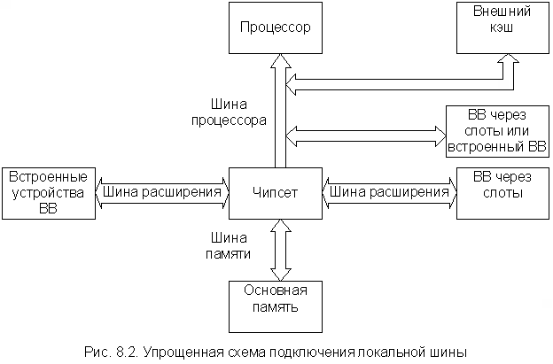

Переход от мэйнфреймов к малым ЭВМ (мини и микро) сопровождался существенным упрощением внутренней структуры компьютера, а именно, переходом к магистрально-модульной структуре. Магистрально-модульная структура предполагает наличие в компьютере некоторой общей магистрали, к которой в необходимой номенклатуре и количестве подключены все устройства ЭВМ, выполненные в виде функционально законченных блоков. Эта магистраль получила название системной (см п. 7.1). Первоначально это был единственный канал связи, по которому внутри ЭВМ передавалась информация между двумя и более компонентами системы. В процессе эволюции мини- и микроЭВМ, а также повышения быстродействия процессоров одной системной магистрали оказалось недостаточно. Однако необходимость преемственности программно-аппаратных средств серийно выпускаемых компьютеров разных поколений не позволила так просто заменить разработанные ранее системные магистрали на более быстродействующие, хотя их производительность не соответствовала производительности новых поколений процессоров. Компромиссным решением этой проблемы оказалось введение помимо основной системной магистрали ряда других, более быстродействующих магистралей, которые получили название локальных шин. В процессе эволюции ЭВМ некоторые из них потеряли свое значение и исчезли (например, VLB), другие продолжали развиваться, принимая на себя все больше функций основной системной магистрали (например, PCI). Ввиду этого в современных компьютерах помимо основной системной магистрали, имеется ряд быстродействующих локальных шин различного назначения.
Прежде чем перейти к рассмотрению основных этапов эволюции шинной архитектуры PC фирмы IBM, необходимо сделать ряд замечаний. Уже отмечалось, что в литературе встречаются различные термины для обозначения системной или общей магистрали. Это прежде всего термины: "общая шина", "системная шина", "шина ВВ" и "шина расширения". Последний термин отражает тот факт, что системная магистраль позволяет подключать к компьютеру дополнительные ПУ для расширения или изменения его возможностей, т.е. позволяет изменять конфигурацию оборудования. При этом часть устройств ВВ устанавливается непосредственно на системной (материнской) плате и не может быть заменена пользователем, а часть устройств ВВ размещается в слотах, установленных на системной магистрали. При взаимодействии с МП те и другие используют одну и ту же системную магистраль. Количество слотов расширения может быть разным. В первом IBM PC их было пять, а в PC/XT – восемь. В последующих моделях РС, имеющих быстродействующие локальные шины, их число изменялось в зависимости от конкретной конфигурации материнской платы.
При дальнейшем изложении материала будет использоваться термин шина расширения (ШР), поскольку сама системная магистраль уже в первых РС претерпела существенные изменения по сравнению с классическим вариантом структуры простейшей микроЭВМ.
Быстродействие ШР первых IBM PC (8 МГц) вполне соответствовало быстродействию процессора I8088, на базе которого они были построены. Между тем для оптимизации процесса обмена между ОП и МП разработчики пошли на усложнение структуры РС и ввели две добавочные шины – шину процессора и шину памяти. Таким образом, обмен внутри ядра ЭВМ (т.е. между ОП и МП) осуществлялся не по ШР, а по автономной магистрали, состоящей из двух шин, которую некоторые авторы называют локальной системной шиной. Этот термин будет использоваться при дальнейшем изложении материала. Взаимодействие шины процессора и шины памяти, а также их взаимодействие с ШР осуществлялось через набор специализированных микросхем (чипсет), которые условно можно назвать контроллером шины. Очень упрощенная структура шин первых IBM PC приведена на рис. 8.1.
Шина процессора является самой быстродействующей и предназначается для передачи данных, команд, адресов и сигналов управления между МП и контроллером шины, который связывает ее с ОП и ШР. Шина процессора первых IBM PC работала на той же тактовой частоте, что и процессор, поэтому слово данных или адрес могли быть переданы по ней в течение одного – двух периодов тактовой частоты процессора (в современных РС тактовая частота шины процессора всегда ниже тактовой частоты процессора). К этой же шине подключался внешний кэш, что позволяло вести обмен процессор – кэш с максимальной скоростью. Число физических цепей в шине процессора существенно различно для различных поколений процессоров. Так, в компьютере с процессором I80286 шина процессора имела 24 линии адреса, 16 линий данных и 12 линий сигналов управления, а в компьютере с процессором Pentium было уже 32 линии адреса, 64 линии данных и почти в три раза больше сигналов линий управления.
Скорость передачи данных по шине процессора (как и по любой другой шине) определяется произведением разрядности шины на тактовую частоту шины, деленному на число тактов, необходимое для передачи одного бита. Так, для первых моделей процессора Pentium с тактовой частотой 66 МГц, совпадающей с тактовой частотой шины процессора, максимальная скорость передачи данных составляет
66 МГц ´ 64 бита = 4224 Мбит/с ® 4224 Мбит/с: 8 = 528 Мбайт/с.
При этом предполагается, что передача машинного слова происходит за один период тактовой частоты шины. Эта скорость передачи данных называется пропускной способностью шины и является максимальной. Она всегда выше средней рабочей производительности шины примерно на 25%. Таким образом, для рассмотренного примера средняя рабочая производительность шины будет составлять около 400 Мбайт/с.
Шина памяти предназначена для передачи информации между ОП и МП, а также ОП и ПУ в режиме ПДП. Информация по шине памяти передается с существенно меньшей скоростью, чем по шине процессора. Это связано с тем, что шина памяти содержит меньше линий данных. Их число определяется шириной выборки. Кроме того, как уже отмечалось, быстродействие микросхем памяти всегда отстает от быстродействия процессора, поэтому процесс передачи информации по шинам памяти и процессора (т.е. по локальной системной шине) требует обязательной синхронизации, которая осуществляется контроллером шины. Уже в первых моделях IBM PC ОП выполнялась в виде отдельных модулей (SIMM), которые размещались в специальных слотах, расположенных на шине памяти, аналогично слотам на ШР. Этот принцип сохранен и в современных PC, хотя сами слоты и модули памяти (DIMM) несколько видоизменились.
Как уже отмечалось, ШР позволяет МП и ОП взаимодействовать с различными ПУ. За время, прошедшее после появления первых IBM PC, было разработано достаточно много вариантов ШР, поскольку появление новых быстродействующих поколений процессоров и ПУ (особенно видеосистем) требовало и более производительных ШР. Между тем одной из главных причин, сдерживающих интенсивное внедрение новых ШР, явилась их несовместимость со старыми стандартами, по которым множество фирм уже выпустили сотни тысяч единиц электронных компонентов PC и которые становились совершенно ненужными в случае использования новых ШР. В связи с этим эволюция ШР происходит достаточно медленно, без резких скачков. Ниже рассматриваются основные моменты в процессе эволюции архитектуры ШР IBM PC.
Шина расширения ISA
Шина ISA (Industrial Standard Architecture) была использована в первых IBM PC, построенных на процессоре I8088, в 1981 г. Она имела 8 линий данных, 20 линий адреса, позволяла адресовать до 1 мегабайта памяти и тактовую частоту 8 МГц. Для передачи данных требовалось от двух до восьми тактов. Эта же ШР была использована и в следующей модели – PC/XT, построенной на процессоре I8086.
Шина ISA считается достаточно простой, но фирма IBM никогда не публиковала ее полной спецификации, поэтому при создании плат адаптеров для первых IBM-совместимых компьютеров разработчикам приходилось самим разбираться в ее работе.
Появление в 1984 году процессора второго поколения I80286, оперирующего уже 16-разрядными данными, поставило задачу замены или модернизации ШР ISA. Фирма IBM пошла по второму пути, и появился компьютер PC/AT со сдвоенными слотами расширения на модернизированной шине ISA. Вторая версия шины ISA имела 16 линий данных, 24 линии адреса, позволяющих адресовать до 16 Мбайт памяти, и тактовую частоту 8 МГц. Для передачи данных также (как и в первой версии) требовалось от двух до восьми тактов. Первая и вторая версии шины ISA были полностью совместимы, а сдвоенные слоты позволяли использовать старые 8-разрядные платы адаптеров, которые можно было вставлять в переднюю часть слота. Новые же (16-разрядные) платы адаптеров вставлялись в обе части сдвоенного слота. Пропускная способность новой версии шины ISA составляла
8 МГц ´ 16 бит: 2 такта = 64 Мбит/с ® 64 Мбит/с : 8 = 8 Мбайт/с.
Соответственно, пропускная способность первой версии шины ISA вдвое меньше, т.е. 4 Мбайт/с. Как уже отмечалось, это теоретическая, максимальная скорость передачи данных. Однако достаточно сложный протокол обмена существенно снижает реальную пропускную способность шины. Считается, что реальная пропускная способность ШР составляет примерно половину от максимальной.
Впоследствии с появлением 32-разрядных процессоров некоторые фирмы начали разрабатывать свои собственные версии расширения шины ISA, но сколько-нибудь заметного распространения они не получили. Дополнительные линии этих шин обычно использовались только при работе с платами расширения памяти и видеоадаптерами. Их параметры и разводки разъемов существенно отличаются от стандартных.
Шина расширения МСА
Появление 32-разрядного процессора I80386 привело к тому, что 16-разрядная ISA перестала соответствовать возможностям нового поколения МП. Фирма IBM не стала вновь модернизировать шину ISA, а разработала новую – МСА (Micro Channel Architecture). Шина МСА полностью несовместима с шиной ISA и не позволяет использовать старые платы адаптеров, однако по всем параметрам превосходит 16-разрядную шину ISA. Это достаточно дорогая шина, разработанная в пику конкурентам для своих компьютеров PS/2, начиная с модели 50. Состав управляющих сигналов, протокол и архитектура ориентированы на асинхронное функционирование шины и процессора, что снимает проблемы согласования скоростей процессора и ПУ. В процессе работы шина МСА может передавать управление отдельным подключенным к ней адаптерам (bus mastering), для реализации режима ПДП или обмена между двумя адаптерами. Все запросы на захват шины поступают в специализированное устройство, называемое арбитром шины (CACP – Central Arbitration Control Point). Арбитр обеспечивает доступ к шине всем устройствам в соответствии с системой приоритетов, предотвращая конфликты и монополизацию шины одним из них. Архитектура шины позволяет эффективно и автоматически конфигурировать все устройства программным путем (в МСА PS/2 нет переключателей ни на системной плате, ни на адаптерах). В шине МСА предусмотрено 6 типов слотов:
Фирма IBM хотела не просто заменить старый стандарт ISA на новый, но и сделать на этом деньги. IBM потребовала от всех производителей, желающих получить лицензию на использование новой шины МСА, заплатить за использование шины ISA во всех ранее выпущенных компьютерах. Это непомерное требование привело к разработке конкурентами фирмы IBM альтернативной шины EISA, что существенно замедлило распространение шины МСА.
Эта причина, а также полная несовместимость с массовыми ISA-устройствами привели к тому, что новая шина МСА при всей прогрессивности архитектуры (относительно ISA) не пользуется популярностью из-за узости круга пользователей МСА-устройств. Между тем МСА еще находит применения в мощных файл-серверах, где требуется обеспечить высоконадежный производительный ВВ.
Шина расширения EISA
Стандарт EISA (Extended Industry Standard Architecture) появился в 1988 году в ответ на разработку фирмой IBM шины МСА и требование ее лицензировать. Конкуренты сочли излишним платить задним числом за давно используемую шину ISA и, проигнорировав новую разработку IBM, создали свою. В этой работе приняли участие практически все ведущие изготовители компьютеров (за исключением, естественно, IBM) и крупнейшие фирмы по производству программных продуктов. Первые компьютеры с шиной EISA появились в 1989 г. Это единственное жестко стандартизированное расширение ISA до 32 бит и количеством слотов расширения до восьми.
Шина EISA разрабатывалась как преемница ISA, а не как альтернатива ей, поэтому различия между ними связаны лишь с появлением дополнительных возможностей. В шине EISA предусмотрены 32-разрядные слоты для компьютеров с процессорами 386DX и последующими моделями. Слот шины EISA построен так, что позволяет разрабатывать устройства, обладающие многими возможностями адаптеров МСА, но при этом может работать и с платами, созданными в старом стандарте ISA.
Несмотря на существенное увеличение числа линий в шине EISA (55 новых сигналов), 32-разрядный слот EISA выглядит почти так же, как и 16-разрядный слот ISA. Между тем слот шины EISA сдвоенный. Два ряда контактов соответствуют 16-разрядному слоту ISA, остальные расположены в глубине разъема и относятся к расширению EISA, поэтому контакты кромкового разъема старых плат ISA, не имеющих специального ключа, попадают только на верхние контакты слота.
По шине EISA можно передавать до 32 бит данных одновременно при тактовой частоте шины 8,33 МГц. В большинстве случаев передача данных осуществляется, как минимум, за два такта, хотя возможна и большая скорость передачи. Максимальную производительность шины реализует пакетный режим (burst mode) – скоростной режим пересылки пакетов данных без указания текущего адреса внутри пакета. В пакете очередные данные могут передаваться в каждом такте шины, т.е. максимальная пропускная способность шины EISA составляет
8,33 МГц ´ 32 бита = 266,56 Мбит/с ® 266,56 Мбит/с: 8 = 33,32 Мбайт/с.
Длина пакета может достигать 1024 байта. Передача данных по "неполной шине" (при работе с 8- или 16-разрядными платами адаптеров в стандарте ISA) осуществляется соответственно с меньшими скоростями.
В шине EISA (как и в МСА) предусмотрена возможность передачи управления шиной одной из плат адаптеров (bus mastering) для реализации режима ПДП или обмена между двумя адаптерами. Работу адаптеров координирует устройство, называемое арбитром шины (CACP), которое иногда еще называют периферийным контроллером (ISP – Integrated System Peripheral). Арбитр временно предоставляет всю систему в полное распоряжение той или иной плате адаптера в соответствии с четырехуровневой системой приоритетов, расположенных в следующем порядке (по убыванию):
В компьютерах с шиной EISA предусмотрена самонастройка прерываний и адресов расположения адаптеров. В компьютерах с шиной ISA и несколькими платами адаптеров при неправильной установке перемычек и переключателей недоразумения практически неизбежны. Программа самонастройки EISA обнаруживает возможные конфликты и конфигурирует систему так, чтобы их исключить. Однако пользователь может и сам установить желаемую конфигурацию с помощью перемычек и переключателей, что бывает необходимо, например, при поиске неисправностей.
EISA – дорогая, но оправдывающая себя архитектура, применяющаяся в многопроцессорных системах, на файл-серверах и везде, где требуется высокоэффективная, надежная ШР.
Рассмотренные выше разновидности ШР (ISA, MCA, EISA) имеют общий недостаток – сравнительно низкое быстродействие. Быстродействие и разрядность процессоров и микросхем памяти (а, следовательно, и локальной системной шины) возрастали, а характеристики ШР улучшались "экстенсивно", в основном за счет увеличения их разрядности. Для ряда ПУ, быстродействие которых определяется "человеческим фактором", например, клавиатуры, «мыши», высокого быстродействия ШР и не требуется. Однако при наличии таких ПУ, как жесткие диски, видеосистемы и т.д., низкое быстродействие ШР оказывает самое непосредственное влияние на производительность системы в целом. Проблема быстродействия ШР встала наиболее остро с появлением графических пользовательских интерфейсов, таких как Windows, при работе с которыми возникает потребность в передаче и обработке очень больших массивов данных.
Достаточно очевидным решением этой проблемы является осуществление обмена между наиболее быстродействующими ПУ и ядром ЭВМ не через ШР, а через дополнительную быстродействующую магистраль, выходящую непосредственно на шину процессора. В этом случае ПУ получают доступ к самой быстродействующей шине компьютера наряду с внешним кэш. Такая конфигурация получила название локальной шины расширения или просто локальной шины (local bus). Подключение локальной шины такого типа иллюстрируется упрощенной схемой на рис. 8.2.
Первая локальная шина появилась в 1992 году в результате совместных усилий фирм Dell Computer и Intel. Хотя система оказалась поначалу весьма дорогостоящей, она продемонстрировала преимущества подключения видеосистемы к той точке, где можно было воспользоваться высоким быстродействием шины процессора. Этот первый вариант локальной шины был официально назван локальной шиной ввода/вывода I486 (I486 local bus I/O). К концу 1992 года стоимость компьютеров с локальной шиной стала снижаться, и многие фирмы начали производить аналогичные системы.
Для организации в компьютере локальной шины необязательно устанавливать слоты расширения: адаптер устройства, использующего локальную шину, можно смонтировать непосредственно на системной плате. В первых компьютерах с локальной шиной использовался именно такой вариант.

Локальная шина не заменяла собой прежние стандарты, а дополняла их. Основными шинами расширения в компьютере по-прежнему оставались ISA или EISA, но к ним добавлялся один или несколько слотов локальной шины. При этом сохранялась совместимость со старыми платами расширения, а быстродействующие адаптеры устанавливались в слоты локальной шины, реализуя при этом все свои возможности.
Компьютеры с локальной шиной стали особенно популярны среди пользователей Windows и OS/2, поскольку в слоты локальной шины можно было установить 32-разрядные платы так называемых видеоускорителей, которые значительно увеличивали быстродействие системы при работе с графическими изображениями. Производительность Windows и OS/2 существенно снижалась из-за ограничений, существующих даже в лучших платах VGA, подключаемых к шинам ISA или EISA. Обычные платы VGA могли выводить на экран до 600 000 точек в секунду, в то время как видеоадаптеры, соединенные с локальной шиной, по утверждениям изготовителей, за то же время выводили 50-60 млн. точек. В реальных условиях быстродействие, конечно, ниже, но разница все равно оказывалась существенной.
В своем первоначальном варианте слоты локальной шины использовались почти исключительно для установки видеоадаптеров. К концу 1992 года было разработано несколько локальных шин. Исключительными правами на них обладали только фирмы-изготовители. Отсутствие стандартов сдерживало распространение локальных шин.
Приемлемое решение предложила ассоциация VESA (Video Electronics Standards Association), которая разработала конструкцию стандартной локальной шины, названной VESA Local Bus или просто VLB. Как и в первых конструкциях локальной шины, через слот VLB можно было получить непосредственный доступ к системной памяти, а ее быстродействие равнялось быстродействию самого процессора. По VLB можно было производить 32-разрядный обмен данными между МП и совместимым видеоадаптером, т.е. ее разрядность соответствовала разрядности данных процессора I80486. Максимальная пропускная способность VLB составляла 132 Мбайт/с.
Использование VLB позволяло изготовителям интерфейсных плат жестких дисков устранить еще одно ограничение: низкую скорость обмена данными между жестким диском и МП. Обычный 16-разрядный IDE-накопитель и его интерфейс могут обеспечить скорость передачи данных не выше 5 Мбайт/с, а адаптеры жесткого диска для VLB позволяли увеличить ее до 8 Мбайт/с. В реальных условиях пропускная способность этих адаптеров несколько ниже, тем не менее, VLB существенно повышала быстродействие накопителей на жестких дисках.
VLB – стандартизованная 32-битная шина расширения, практически представляющая собой линии шины процессора I80486, выведенные на дополнительные слоты системной (материнской) платы. Конструктивно шина VLB выполнена в виде добавочных слотов, расположенных позади уже существующих системных слотов ШР ISA-16, EISA, МСА (по продольной оси) вблизи процессора. Таким образом, платы адаптеров одновременно вставлялись и в слоты ШР, и в слоты VLB. Слоты шины VLB обычно использовались для подключения графического адаптера и адаптера жесткого диска. Однако существуют системные платы, которые имеют встроенный графический и дисковый интерфейсы с шиной VLB, но сами слоты VLB отсутствуют. С точки зрения надежности и совместимости такой вариант наиболее оптимален, поскольку проблемы совместимости адаптеров и согласования нагрузок для шины VLB стоят очень остро.
При всех своих достоинствах шина VLB имеет ряд недостатков, основными из которых являются:
Указанные недостатки оказались настолько существенными, что в современных IBM PC шина VLB не используется.
Локальная шина PCI
В начале 1992 года на фирме Intel была организована группа, перед которой была поставлена задача разработать новую шину. В результате в июне 1992 года появилась шина PCI (Peripheral Component Interconnect bus), в апреле 1993 она была модернизирована. Ее создатели отказались от традиционной концепции, введя еще одну шину между МП и обычной шиной ВВ. Вместо того чтобы подключаться непосредственно к шине процессора, чувствительной к подобным вмешательствам (о чем сказано выше), новый комплект ИС (чипсет) позволял создавать новую архитектуру шин IBM PC. Первые компьютеры с шиной PCI появились в середине 1993 года, и вскоре она стала неотъемлемой частью компьютеров класса high end.
Новая локальная шина существенно превосходила своих предшественниц по функциональным возможностям, производительности, надежности. Наличие чипсета делает шину PCI процессорно-независимой, что позволяет ее использовать с платформами не только на Intel-подобных процессорах. Это является очевидным преимуществом с точки зрения производителей плат расширения (адаптеров), которые стараются избегать разных версий одной и той же платы. Кроме того, наличие чипсета позволяет шине PCI работать параллельно с шиной процессора, не обращаясь к ней со своими запросами. Это даёт возможность процессору работать с данными, находящимися во внешнем кэш, в то время как по шине PCI может происходить обмен между ПУ и ОП в режиме ПДП (DMA).
Первоначально в IBM PC использовалась только версия 2.0 шины PCI, поддерживаемая чипсетами малой интеграции (5-6 микросхем) типа Neptun или Saturn. Однако с появлением чипсетов большей интеграции типа Intel 430 (Triton), Intel 440, Intel 810 в IBM PC стала использоваться новая версия шины PCI-2.1, которая вскоре была заменена версией PCI-2.2 (например, чипсет Intel 815). Эта версия используется и в настоящее время (чипсеты Intel 850, Intel 860, VIA KT 266 для процессоров AMD и др.). Версии 2.0, 2.1 и 2.2 имеют обратную совместимость на тактовой частоте 33 МГц. Основные возможности шины PCI следующие:
· 132 Мбайт/с при 32-бита/33 МГц;
· 264 Мбайт/с при 32-бита/66 МГц;
· 264 Мбайт/с при 64-бита/33 МГц;
· 528 Мбайт/с при 64-бита/66 МГц.
Рассматривая возможности шины PCI, необходимо иметь в виду, что чипсет является не просто согласующим элементом между различными шинами PC. Он основное связующее звено между всеми компонентами системной платы. Набор решаемых им задач очень обширен и во многом определяет характеристики конкретной модели компьютера, поэтому рассмотрение функциональных возможностей PCI-архитектуры в отрыве от функций чипсета весьма затруднительно. Так, например, возможность выполнения обмена данными между процессором и ОП одновременно с обменом между другими устройствами шины PCI (concurrent PCI transferring), предусмотренная в спецификации шины, реализована не во всех типах чипсетов.
В общем случае чипсет можно разделить на две функциональные части. Одна часть чипсета обеспечивает взаимодействие шины PCI с локальной системной шиной (т.е. с шиной процессора и шиной памяти). Эту часть принято называть главным мостом (host bridge). Вторая часть обеспечивает взаимодействие шины PCI с ШР ISA и ряд других функций. Эту функциональную часть чипсета принято называть мостом PIIX (PCI, IDE, ISA Xcelerator bridge). Такому функциональному делению соответствует и разделение набора задач, решаемых чипсетом.
В функции главного моста входит решение следующих задач:
Мост PIIX также является многофункциональным устройством и решает следующие задачи:
Микросхемы чипсета при инициализации во время начального тестирования (POST) программируются по многим параметрам, основная часть которых находится в BIOS. Таким образом, системные платы, выполненные даже на одном и том же чипсете, могут иметь различные производительности и диапазоны поддерживаемых устанавливаемых компонентов (процессоров, DRAM, кэш). Соответственно и шины PCI, реализованные в различных моделях РС (особенно у разных производителей), могут несколько отличаться по своим функциональным возможностям.
Обозначенные на схеме интерфейсы для подключения высокоскоростных ПУ (AGP, SCSI, IEEE 1394, IDE, USB) в настоящем разделе не рассматриваются. Отметим только, что многие модели современных IBM PC имеют еще ряд других (не обозначены на схеме) специализированных интерфейсов для подключения разнообразных типов ПУ.
Для устройств промышленного назначения в начале 1995 года был принят стандарт Compact PCI, разработанный на основе версии PCI 2.1. Шины Compact PCI и PCI имеют электрическую совместимость и одинаковые протоколы обмена по шине, хотя и имеют некоторые отличия в механизме автоконфигурации системы. В отличие от стандарта PCI стандарт Compact PCI позволяет устанавливать на одной шине до восьми слотов расширения, конструкция которых существенно отличается от конструкции слотов PCI и предназначена для работы компьютера в тяжелых условиях – пыль, вибрация, влажность и т.д.
В заключение следует отметить, что появление шины PCI положило начало полному вытеснению из РС фирмы IBM, в общем-то, устаревшей ШР ISA. В настоящее время шина ISA оказалась практически вытесненной из архитектуры IBM PC и все ее функции выполняет шина PCI, которая из локальной превратилась в основную ШР современных IBM PC.